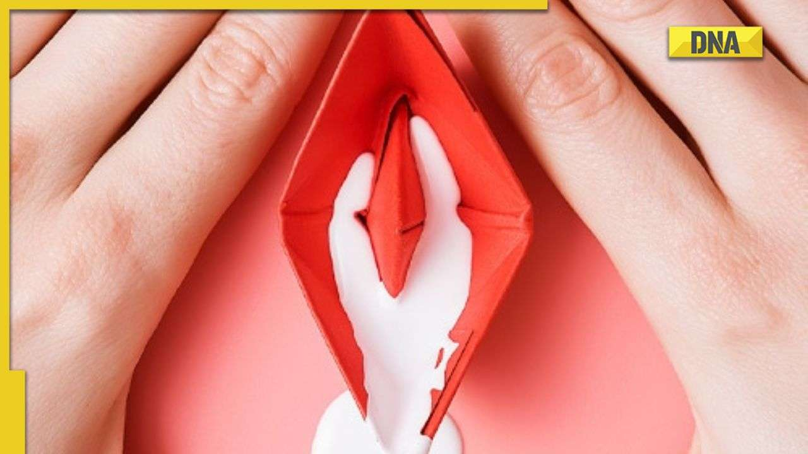
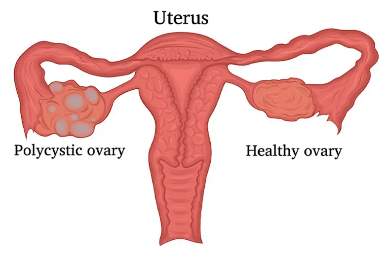
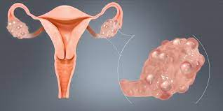

White Discharge
Vaginal discharge
Symptoms
Precautions
Homemade Remedies
- Itching and Burning in Vagina
- Pain during sexual intercourse
- Burning and sensation during urination
- Thick vaginal discharge
-
Observe personal hygine.
-
Less sugar and alcohol.
-
Eat more fruits,vegetables.
-
Use Loose cotton underwear.
- Tablets
- Suppositories
- Cream
Breast Cancer
Forming of lumps
Symptoms
Precautions
Homemade Remedies
- Lumps in breast or in the underarm area.
- A change in the size or shape of the breast.
- Dimpling or puckering in the skin of the breast.
- A nippleturned inward into the breast.
- Discharge(Fluid) from the nipple.
- Scaly,red or swollen skin on the breast or nipple.
- Be physically active.
- Limit alcohol.
- Don't smoke.
- Avoid Plastic
- Eat right food
- Avoid exprosure to radiation and pollution.
- Research shows mothers who breastfeed lower their risk of pre and post menopausal breast cancer.
- Encourage staying at home and taking rest
- Make the child drink plenty of clear liquids to prevent dehydration
- Give an oral rehydration solution, or ORS, which can help replace fluids
and nutrients lost through vomiting and diarrhoea
Stomach Pain
Abdominal pain
Symptoms
Precautions
Homemade Remedies
- Severe pain
- Fever
- Bloody stools
- Persistent nausea and vomiting
- Weight loss
- Skin that appears yellow
- Severe tenderness when you touch your abdomen
- Swelling of the abdomen
- Slow Down
- Change How Often You Eat
- Watch What You Eat
- Follow Your Hunches
- Drink More Water, Less Soda
- Wash Your Hands
- Manage Stress
- Consider Over-the-Counter Meds
- Place a hot water bottle or heated wheat bag on your abdomen.
- Soak in a warm bath. Take care not to scald yourself.
- Drink plenty of clear fluids such as water.
- Reduce your intake of coffee, tea and alcohol as these can make the pain worse.
- When you are allowed to eat again, start with clear liquids, then progress to bland foods such as crackers, rice, bananas or toast. Your doctor may advise you to avoid certain foods.
- Get plenty of rest.
- Try over-the-counter antacids, to help reduce some types of pain.
- Take mild painkillers such as paracetamol. Please check the packet for the right dose. Avoid aspirin or anti-inflammatory drugs unless advised to take them by a doctor. These drugs can make some types of abdominal pain worse.

PCOS
PCOS
Symptoms
Precautions
Homemade Remedies
- Polycystic ovary syndrome
- Irregular periods or no periods at all.
- Difficulty getting pregnant (because of irregular ovulation or no ovulation)
- Excessive hair growth (hirsutism) – usually on the face, chest, back or buttocks.
- Weight gain.
- Thinning hair and hair loss from the head.
- Oily skin or acne.
- Stay at a healthy weight.
- Weight loss can lower insulin and androgen levels. It also may restore ovulation. Ask your health care provider about a weight-control program, if you need one. Meet with a registered dietitian for help in reaching weight-loss goals.
- Be active. Exercise helps lower blood sugar levels. If you have PCOS, increasing your daily activity and getting regular exercise may treat or even prevent insulin resistance. Being active may also help you keep your weight under control and avoid developing diabetes.
- Limit carbohydrates. High-carbohydrate diets might make insulin levels go higher. Ask your provider if a low-carbohydrate diet could help if you have PCOS. Choose complex carbohydrates, which raise your blood sugar levels more slowly. Complex carbohydrates are found in fruits, vegetables, whole grains and cooked dry beans and peas.
- Self care
- Medications
- Consult a Gynecologist

Pcod
PCOD
Symptoms
Precautions
Homemade Remedies
- Polycystic Ovarian Disease
- Irregular menstruation (Oligomenorrhea)
- Skipped or absence of menstruation (Amenorrhea)
- Heavy menstrual bleeding (Menorrhagia)
- Excessive Hair growth (face, body - including on back, belly, and chest)
- Acne (face, chest, and upper back)
- Weight gain
- Exercise Can Help
Just because you are going through a disease does not mean that you have to be on the bed the whole time cribbing about how unwell you are. Rather, get up and keep your body working by exercising on a regular basis, this has nothing to do with joining a gym and buying expensive equipment, all you need to do is develop a walking habit of 30 minutes a day, few days a week. You can walk around in the park with your friends or go shopping sometimes & rather make it fun walk instead of a boring one. You can also go for lifting some weights as it helps in improving metabolism and insulin.
- Sleep Enough
Remember that your eight hours sleep is more than important for you as not having a proper amount may result in imbalance in the hormone which deals with the hunger further leading into unwanted consumption of unhealthy food items available in hand. Getting a proper amount of sleep can help you feel better and refreshed as well as it can help in reducing weight if you are facing the issue of obesity.
- ake Proper Medication
First of all, keep stocks of medicines with you which are prescribed by the doctor to take at a specific time and days. Skipping these medicines can lead to the ineffectiveness of the whole medical Homemade Remedies based on the pills intake and it can also be dangerous for your health and the disease you are going through. Keeping stocks will help you to not run out of medicines at odd timings and you can make a proper schedule of taking medicines or get it made by your doctor and make sure you understand your medicine intake properly to avoid any mistakes.
- Keep Track of Your Periods
Keep a thorough track of your menstrual cycle because irregularity in periods or missing periods can be a matter of concern for the people suffering from PCOD. It can lead to endometrial cancer or other major complication and if you keep track of your periods, it will be easier to report such problems to the doctor and it will help the doctor to deal with it more efficiently.
- Maintain Proper Weight
Many women suffering from PCOD have to face the issue of obesity but it is important to not neglect it because it can lead to further severe problems. So, it is better to maintain your proper weight and avoid complications. You can do this by regularly exercising, by eating healthy food and maintain a balanced diet instead of unhealthy food intake as it will just make situations difficult for you.
- Self care
- Medications
- Consult a Gynecologist